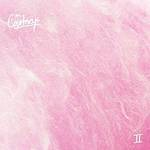
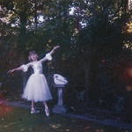

The Best Albums of 2017
So this is it! It's time to reveal our top albums of the year. A longstanding tradition since 2002, our full list consists of 50 albums selected by the entire No Ripcord staff.
...
 50. Sampha
50. Sampha
Process
(Young Turks)
The record that snaffled 2017’s Mercury Prize was the coming of age for an artist who had – until recently – hid behind anonymity. Over the past few years, some of pop music’s biggest megastars have enlisted Sampha Sisay’s writing, vocal and production prowess, but it’s with his debut LP that these talents are explicitly brought into focus. Process is ultimately an album that is harrowingly personal, doused with regret and placing the loss of his mother to cancer at the forefront of the record. His voice is luscious, breathy and warm and aching with impartial soul. The arrangements of the album’s tracks are stunning, from the sparse opener Plastic 100°C to the propulsive beat of Blood On Me, while the devastatingly beautiful, reflective piano ballad of (No One Knows Me) Like The Piano is one of the most heart-rending tracks of recent times. Carl Purvis
49. Mark Eitzel
Hey Mr. Ferryman
(Merge)
I’ve never been a particularly big American Music Club or Mark Eitzel fan. Indeed, given that I’ve overlooked most of its creator’s career, I’m not entirely sure what prompted me to check out Hey Mr. Ferryman in the first place, but I’m certainly glad I did. This a rich and mature set of songs, in which producer Bernard Butler’s carefully considered instrumentation provides an ideal platform for Eitzel’s vocal to shine. Admittedly, I might not be the best judge, but I’d wager that he’s rarely sounded better than he does on sublime cuts such as the timeless The Last Ten Years. I will await his next steps with interest. David Coleman
48. The Mountain Goats
Goths
(Merge)
Forget the John Darnielle of the early aughts, forget lo-fi and embrace the super-produced hi-fi concept albums of the new Mountain Goats, where the same effortlessly literary lyrics have found their home in haunting choral harmonies, piano-heavy melodies and a tight ensemble cast. Darnielle has said on his most recent tour that he’s tired of playing his older songs, the fan favorites, but he’s replaced the one-man-one-guitar aesthetic with something special. Goths is a sweeping record with no guitars to speak of, a beautiful soundscape that tells a story of a goth singer trying to make his way to fame on the west coast, and the mediocrity that becomes of him. Darnielle’s ability to create universal appeal from this tale is what makes him such a superlative songwriter, bobbing and weaving from chamber pop to jazz to jangly indie rock. It’s elegant, nostalgic, humorous, melancholy and, most of all, relatable. Gabbie Nirenburg
47. The Courtneys
The Courtneys II
(Flying Nun)
As the first non-Kiwi band to earn the Flying Nun seal of approval, The Courtneys seemed destined to be a surefire hit with this critic. Thankfully, and predictably given the venerable label’s impeccable taste levels, The Courtneys II did not disappoint. A consistent and unpretentious album of fuzzy power-pop, what The Courtneys II lacks in surprises it more than makes up for with gorgeous melodies and satisfying choruses. I enjoy a challenge, sure, but sometimes you just want to listen to a band passionately exploring familiar terrain in a really effective manner. The Courtneys aren’t going to change your world, but they sure as hell lay down a great soundtrack for it. And sometimes that’s more than enough. David Coleman
46. The New Pornographers
Whiteout Conditions
(Concord Records)
Though Dan Bejar's departure left a deep void in the songwriting department, the music collective have risen to the challenge, picking up the slack with an energized sound and a sparkling set of tunes. Songs like Play Money and High Ticket Attractions chase the blues away with disarming optimism. This is spiritual music for people who are still sitting on fences. We've Been Here Before could be about reincarnation, but there are other mystical experiences to be found on tracks like Second Sleep and Juke, where the vocal arrangements take the form of sound sculptures. The title song and Avalanche Alley run on all eight cylinders, with pulsing beats that will get you off the couch. In this bleak year, Whiteout Conditions works like a tonic. Angel Aguilar
45. Run the Jewels
Run the Jewels 3
(Run the Jewels, Inc.)
For anyone not named Kendrick Lamar, releasing a rap album in 2017 was an endeavor for the undaunted and the mighty. Fortunately, Run The Jewels (aka Killer Mike and El-P) represented bare-knuckled grit and raw talent better than anyone else on their third album, Run The Jewels 3. Blasting their record in the car made me feel like I was in Grand Theft Auto with a Tec-9 in my glove box and police lights in my rearview mirror. No one else sounds like Run The Jewels. No one else raps like Run The Jewels. Run The Jewels is the future. Luiza Lodder
44. Thundercat
Drunk
(Brainfeeder)
Drunk is a timeless record, one that sounds instantly familiar and yet still groundbreaking. It blends the “old” - 70’s-sounding R&B and soul (the effect of which is aided by Bruner's exceptional falsetto) - with the “new”, supported by guest spots from artists including Flying Lotus, Pharrell Williams and Kendrick Lamar. As an album, it’s as experimental as Thundercat’s previous releases but one which comes across as more of a complete work of art. And on the subject of art, the album’s exceptional cover art (one of the finest of the year, in this writer’s opinion) should also get a special mention for the humorous, yet intense expression, nestled amongst calm waters; a perfect metaphor for the album itself. Craig Stevens
43. Algiers
The Underside of Power
(Matador)
Merging this bitter pill of our political and social reality with a tent revivalist’s understanding of how post-punk works, Algiers’ excellent second LP, The Underside of Power, considered both the message and its package. With commentary relevant to the age, Algiers navigates “left of the dial” while capitalizing on gospel’s intent to awaken souls, the results thrilling, distinct and powerful. Producing what was one of the more striking singles of the year with Cleveland, the city’s name used as reference to the senseless murder of 12-year old Tamir Rice at the hands of the police in 2014, The Underside of Power casts stones at formidable opponents: fascism (Death March), apathy (Hymn for an Average Man) and the current occupant of the White House (Animals). Still, even if the view isn’t always uplifting, Algiers never burden listeners with cynicism or a sense of inevitable defeat. Sean Caldwell
 42. White Reaper
42. White Reaper
The World's Best American Band
(Polyvinyl)
This sleeper of an album really takes you by surprise. Its cocky swagger is an initial turn-off, without question. The album name alone, and the title – and first! – track, which opens with a simulated adoring audience, doesn’t leave you entirely sure whether you’re laughing with or at them. But once the record swings back around to the start, it’s hard not to feel the same heart palpitations that come along with the first few bars of Cheap Trick’s I Want You to Want Me, live in 1979. The whole album feels this way, a resurrection of Thin Lizzy, The Cars, The Ramones, and more recently the Stereophonics, or even Jet… except good. What it lacks in originality it makes up for in talent, energy and excitement. Just try listening to the chorus of Little Silver Cross without bursting out into dance. The World’s Best American Band is full of radio-ready anthems, maybe for the wrong decade, but just what we needed…pun intended. Gabbie Nirenburg
 41. Priests
41. Priests
Nothing Feels Natural
(Sister Polygon)
In a year where rock bands were falling over themselves to write about Brexit and Trump, Priests’ debut album was a furious salvo. Released days after the Presidential Inauguration, it looks past the disease to find the symptoms. “Who ever deserves anything anyway/What a stupid concept,” Katie Alice Greer spits out on JJ. No Big Bang decries the dehumanizing pace of technology and “progress.” Pink White House criticizes armchair protesting. And the band does it with infectious, riotous punk. But during Suck, Greer sings, “Please don't make me be/Someone with no sympathy.” It’s a battle cry and pushback not just against the systemic flaws of society, but against the cynicism and disbelief that hits us with each day’s infuriating challenges. When the problems of the world have crested into a wave that flipped the boat upside down, Nothing Feels Natural sums up our feelings on it all. Joe Marvilli
40. Ulver
The Assassination of Julius Ceasar
(House of Mythology)
It was with a heavy and resolute stride, synthesized embellishments softening the brunt of its initial push, that Ulver’s 2017 release, The Assassination of Julius Caesar, was announced. Its lead single, Nemoralia, sounded as determined as it did hypnotic, vocalist Kristoffer Rygg offering an impassioned performance overtop a soundscape boldly comprised of electronics and hooks. The single summed up Ulver’s 13th release perfectly, The Assassination of Julius Caesar, proudly being dubbed “their pop album,” though not as a means of connection with trends. With reverence to the synth-pop of yore and Ulver’s already adept command of the darker side of things, the group revels in the opportunity to sound sleek and melodic, reaching levels of excellence with the infectious and catchy (yes, catchy!) Rolling Stone, the tonal gloom of So Falls the World and the beautifully harmonized 1969. Sean Caldwell
39. Grandaddy
Last Place
(30th Century Records/Columbia)
At first, it appears as if nothing's changed for Grandaddy. The veteran California indie rock band return with their first album in ten years, where elusive frontman Jason Lytle allows himself to reflect on the past few years in a more direct manner over their spacey flights of fancy. His lush indie rock songs haven't aged one bit, with grand, sweeping songs that are filled with both sadness and regret. Overall, Lytle reveals a wry and perceptive honesty about himself instead of hiding behind humanoids and androids. It's a beautifully captivating return that stands just as tall alongside his finer works. Juan Edgardo Rodríguez
38. King Krule
The OOZ
(True Panther Sounds)
On the epic The Ooz, Archy Marshall obfuscates a certain singer-songwriter directness and '90s alternative vibe that defined his debut, 6 Feet Beneath the Moon. Rather, this new album under the Krule moniker is permeated by a trippy, nocturnal nebulousness and soporific sorrow. Its brooding genre synthesis further indulges Marshall's deep English drawl and penchant for art music, as he uniquely dissects pop song structures with the surreal interplay of ambient dub tones and grimy post-punk. More significantly, Marshall builds a repertoire of infectious off-kilter jazz on The Ooz's latter half. While far from conventional, the DIY ethos and vocal theatrics of Dum Surfer and Half Man Half Shark may represent the most accessible material, alluding to the appeal of Exploded View and Liars. Yet, the ringing, slightly discordant overtones of the deeper introspective cuts like Slush Puppy, Lonely Blue, Midnight 01 (Deep Sea Diver) and the title track each reveal a stoned, aching vexation comparable to the most affecting and intimate moments in Radiohead or Atlas Sound's discography. Grant Phipps
37. Drake
More Life
(Young Money)
Is it an album? Is it a mixtape? No, according to Drake. At least, it’s a playlist. Which is probably why his only full-length statement of 2017 saw him willing to take on (and master) a wider range of genres than on any of his previous releases. Dancehall, grime, afrobeat, hip-hop and even house music are all tackled on this 22-track, 81 minute epic, its diversity helped by collaborations with producers and artists from all over the world; most noticeably, South African house producer Black Coffee, soul singer-songwriter Jorja Smith and British hip hop and grime artists Giggs and Skepta. More Life is Drake at the top of his game; it's also his best since Take Care. Craig Stevens
 36. Mount Kimbie
36. Mount Kimbie
Love What Survives
(Warp)
The third album from Dominic Maker and Kai Campos sees the pair drop their post-dubstep sound for a sparser and insular one. With the help of some incredible features, this is the most the London duo have sounded like a band. The highlights come from a rekindling of their partnerships with King Krule and James Blake. The former features on the haunting Blue Train Lines, a track that desperately tries to keep up with Marshall's increasingly fragmented screams. While the latter’s contributions on the glorious We Go Home Together and How We Got By offers some respite from the hypnotic and claustrophobic sound that dominates the rest of the album. That being said, either when Mount Kimble are working alone or collaborating, Love What Survives is one of the year’s most compelling electronic albums. Matthew Smith
35. Los Campesinos!
Sick Scenes
(Wichita Recordings)
At a recent show, frontman Gareth David asked any music writers to remember to include them in the 'worthy mentions' category of their end-of-year lists. Although, a passing mention wouldn't give the Cardiff-formed band enough credit for their sixth album, and what is possibly their most vibrant sounding one yet. As always, it’s nigh on impossible to keep up with David’s string of references, whether those are obscure football players or Interpol puns, but it's difficult not to try. The album’s opener - Renato Dall'Ara (2008), titled after a stadium used during Italia ’90 - is essentially a sarcastic acknowledgment that they're a band way past their peak. By the album's end, however, Los Campesinos! are definitely enjoying the last laugh. Matthew Smith
34. Laura Marling
Semper Femina
(Kobalt Music Group)
Of all the words I can use to describe Laura Marling’s Semper Femina, the one my mind keeps returning to is “healing”. This is an album that re-centers the female experience, reclaims it from the gazes and the fantasies of men, and celebrates its contradictions. “I banish you with love,” Marling sings on Soothing, her quiet croon drenched in affection. She sings of lovers and friends, intimacy and distance, wildness and submission. Semper Femina isn’t Marling’s first masterpiece, but judging by its richness, Marling’s well of craftsmanship and originality isn’t set to dry up any time soon. Luiza Lodder
 33. Vagabon
33. Vagabon
Infinite Worlds
(Father/Daughter Records)
Considering what a great year this was for music releases, it can be a little overwhelming when it comes to choosing favorites. Vagabon's surprisingly accomplished debut, Infinite Worlds, is one of those albums that easily stands out on its own. The solo project of Laetitia Tamko, Vagabon offers a take on DIY indie that is refreshing and almost startling in how new it all sounds despite borrowing from familiar sources. Even more startling is her songwriting. As a first-generation immigrant from Cameroon, she explores various facets of prejudice with sharp wit and unflinching observations, often in a soaring tenor that resonates with defiance and power. Even when she's at her most hushed, she never falters, and what's impressive is how an album so personal and vulnerable can feel so empowering and even uplifting. Jeremy Monroe
32. Cigarettes After Sex
Cigarettes After Sex
(Partisan Records)
Reverb turned to 11 and an attitude so lackadaisical they make Beach House look like Metallica, it would be easy to dismiss Cigarettes After Sex as little more than students of shoegaze. Plus there’s that terrible band name to try and overlook. But over time, this album’s ten tracks burrow under your skin with their simplicity and melodiousness and before you know it, you’re victim to the best collection of understated night-time “anthems” since The xx’s debut. That’s before acknowledging the vocals, which thanks to their disinterested semi-croon, showcase tales of debauchery, emotionless liaisons and inner-city narcissism, hiding in plain sight. The record’s insouciance and quasi-sociopathic disregard create a reverie not too dissimilar to an anhedonic post-coital fog. Maybe that name does make sense after all. Joe Rivers
31. Spoon
Hot Thoughts
(Matador)
Spoon has always had a swagger and attitude that felt one step away from dancing. On Hot Thoughts, the band makes the plunge into the funk, with a record of sharp beats, slippery bass and disco guitar. The title track is their grooviest song this side of Chic, giving Get Lucky a run for its money. Can I Sit Next to You brings percussion that makes sitting still impossible. Shotgun runs along a driving bass line. Among these rhythms and thumps, Spoon makes room on Pink Up and Us to stretch their sound further out than ever before. The most consistently excellent band of the 21st century? Going by the continued win streak found in Hot Thoughts, it’d be hard to argue with that. Joe Marvilli
30. The Horrors
V
(Wolf Tone Limited)
When they first emerged in 2007, all big-haired and skinny-jeaned, it’s doubtful that anyone would have predicted that garage rock revivalists The Horrors would be around ten years later. Or that they’d mature into one of the UK’s finest guitar bands in the process. But that’s exactly what happened in V. Despite the gradual refinement of their sound over the course of their career to date, The Horrors’ fifth album was still something of a surprise, and certainly the biggest leap forward they’d taken since 2009’s Primary Colours. Finally hitting upon the gothic sound that their image hinted at, V is a darkly seductive party record, dressing up some gigantic pop hooks and grooves in a glossy electronic sheen, and incredibly difficult to resist. Mark Davison
 29. Rolling Blackouts Coastal Fever
29. Rolling Blackouts Coastal Fever
The French Press
(Sub Pop)
There’s something refreshingly straightforward about Rolling Blackouts Coastal Fever. Whatever you think of indie-rock in 2017, the Melbourne bands second EP, The French Press, demonstrates that a simple interpretation of the genre’s signature sounds can still sound thrilling in the right hands (see also: Car Seat Headrest). The execution here is top notch, but there’s also a laid-back swagger characteristic of many of the genre’s high water marks. The guitar parts are pretty without being unnecessarily showy; nothing is heavy-handed or obvious. If they can maintain momentum and deliver on this early promise, I wouldn’t be surprised to see Rolling Blackouts Coastal Fever sitting atop this list within the next two years. David Coleman
28. Jay Som
Everybody Works
(Polyvinyl)
Anyone who’s wrongly fixated on this idea that indie rock has long had its last hurrah hasn’t been paying attention. The genre is still alive and well thanks to artists like Jay Som - the nom de plume of Melina Duterte - a Filipino-American bedroom recorder whose fuzzed-out guitar dynamics and sulky dream pop offer a droll look at the confusion of young love with a heavy, palpitating heartbeat. Everybody Works is a prodigious summation of Duterte’s eclectic taste, where her emotionally bare confessions follow the scrappy, folk-tinged hooks of disaffected romantics like Lou Barlow and Stephen Merritt. But Duterte retains a compositional songwriting framework throughout, even if she does relish those periodical musical moments that can give an album a dense, layered sound. It’d be an understatement to say that the self-produced Everybody Works stirs with passion at every turn. Juan Edgardo Rodríguez
27. Kelly Lee Owens
Kelly Lee Owens
(Smalltown Supersound)
After last year's Oleic extended play on Smalltown Supersound, this first proper self-titled LP from the Wales-based electronic artist finds her expanding upon many of those tunes in a context that augments her ethereal, ambient pop sensibilities while retaining the sleek, enigmatic allure of modular techno-house textures and spacious Krautrock-leaning production. The approach quite openly expresses admiration for her contemporaries Ellen Allien (hear Evolution) and Jenny Hval, who actually appears here as co-writer of Anxi., lyrically cross-referencing Period Piece from 2016's Blood Bitch. Owens's methods are generally more meditative, as on the opening seconds of standout Arthur, where field-recorded sounds of rain and birdsongs gently glide into the atmospheric vocal mix. Her own velvety tone sustains, hovering over the undulating synth bass and looping hi-hat. Lucid is perhaps the mellifluous album's most effervescent earworm with a sharp sense of dynamics; string synthesizers drive the tranquil warmth of her vocal repetitions before building to a club-friendly close with its whirling arpeggios. Grant Phipps
26. Father John Misty
Pure Comedy
(Sub Pop)
After the rapturous response to I Love You, Honeybear, where next for the world’s trendiest troubadour, Josh Tillman? Turns out it was a wildly ambitious rock opera covering the totality of human existence. And that’s just Pure Comedy’s opening track. Not one to do things by halves, Tillman then followed it up with a double-whammy of grim predictions about the decline of Western civilisation. Unsurprisingly, Pure Comedy’s ironic misanthropy turned out to be a bit of a turn off for many of those won over by Honeybear’s uncharacteristic sweetness and sincerity. However, that’s not to say that there weren’t moments of genuine beauty to be found here, particularly in its quieter mid-section and the 70s soft rock-sheen of its production. Given that most responses to 2017’s news cycle have been either detached disdain or outright despair, Tillman’s ability to combine honesty with grace made him a much-needed voice this year. Mark Davison
 25. Fever Ray
25. Fever Ray
Plunge
(Rabid Records/Mute)
After lying dormant for almost a decade, The Knife’s Karin Dreijer's gleefully outrageous return to her Fever Ray persona was 2017’s most welcome surprise. However, while the black metal-inspired aesthetic of Plunge might have been in keeping with the gothic air of the first Fever Ray record, this follow-up’s contents were more a continuation of The Knife’s swansong, Shaking The Habitual. Or rather a perfection of that record – the rave-style horns of the opening track suggesting that this would be something less ponderous than Shaking The Habitual had been. Plunge’s timing seemed equally perfect – while back in 2012 The Knife’s gender-queer rhetoric seemed like a niche concern, in 2017, the subject was considerably more high profile. And in its joyful brashness – this being a record whose lead single proudly stated “I wanna run my fingers up your pussy” – Plunge felt like it could be a rallying cry for this growing movement. Mark Davison
24. Arca
Arca
(XL Recordings)
Alejandro Ghersi looks into the past with an acquired breadth of knowledge on Arca. The Venezuelan producer’s third release is his most open-hearted work, a crushing document of heartache at its rawest that gives a human element to his more abstract faculties. Ghersi chose Spanish to better communicate his feelings, the language that he was exposed to from birth and during the most critical moments of his life. Choosing his native tongue provides a bona fide gravitas to tracks like Anoche and Desafío, for instance, where his yearning desires plow into winding, claustrophobic passages of textural noise. Ghersi has always been a nuanced sound sculptor, a trait that has given a deformed beauty to past efforts like Xen and Mutant. But as his more abstruse character demonstrates, that overbearing state of disarray is most effective when in moments of calm contemplation. On Arca, he channels those stirring emotions with a conductor’s sense of elegance, confounding one’s expectations with his arousing confessions of pleasure and pain. Juan Edgardo Rodríguez
23. Nadine Shah
Holiday Destination
(1965 Records)
This year has been littered with hasty, half-baked political statements. It’s inevitable considering our dire state of affairs; the urgency is there, and rightfully so. Which is why Nadine Shah chooses her targets more carefully on Holiday Destination, where she points out these injustices in a piercing and challenging manner. Her more astute observations simmer with a patient fury, and she won’t settle for anything but the unadulterated truth. The images she strikes are factual for added effect, and she addresses such hot-button topics while ingraining her own personal experience as a second-generation immigrant. She defends the defenseless (Holiday Destination), questions the lack of empathy (Out of the Way) and spitefully measures the worth (Yes Men) of those who have the privilege to make these decisions. But it wouldn’t be as effective if her brooding post-punk wasn’t as tuneful, where every sharpened guitar and freakish sax adds to the Holiday Destination’s alluring eccentricities. She paints a dreary portrait of shattered ethical order, but not without also offering a faint glimmer of hope. Juan Edgardo Rodríguez
22. Julien Baker
Turn Out the Lights
(Matador)
From the gloomy pianos of instrumental opener Still, it's clear that Julien Baker's second album, Turn Out the Lights, is an entirely different album from 2015's Sprained Ankle. Where that album was mostly centered around her guitar with occasional backing, here she emerges with a fuller sound, with voice, piano, guitar and even lush strings creating a richer atmosphere while also heightening the air of despair. The mood is more tense and urgent than that of her debut, and though the songs on Sprained Ankle were confessional in nature, here, Baker plumbs the depths of a troubled and broken heart even further, examining coping with mental illness, self-worth, broken relationships and God. The added introspection lends the songs greater emotional depth. Melancholy and overwhelming at times, there's a real sense of beauty emanating from the darkness that makes this a cathartic and even comforting experience. Jeremy Monroe
21. Kelela
Take Me Apart
(Warp)
A full four years after her debut mixtape, Cut 4 Me, announced Kelela to the world, she released her first studio album. Kelela’s previous work was characterised by bleeding-edge production and skittering rhythms, but on Take Me Apart she managed to scale that back sufficiently to create a cohesive full-length while still staying inventive and several steps ahead of her peers. Take Me Apart is an album that tries to come across as cool and insouciant, but beneath the surface it’s the soundtrack to a night that will linger long in the memory, where every emotion felt is the most extreme of your life. Songs of lust, longing and regret delivered in honeyed vocals over tracks that hark back to the early days of UK dubstep, Take Me Apart in an essential release. Joe Rivers
20. Mac DeMarco
This Old Dog
(Captured Tracks)
Mac DeMarco's public persona as a happy-go-lucky prankster has allowed him to move around with killing casualness while veiling his self-protective habits. Not this time, though. He tackles family issues and maturity head-on on tracks like My Old Man, Sister and Watching Him Fade Away. There's a matter-of-fact directness to these songs that is highly compelling, the need to unburden himself palpable. These are ongoing stories, the emotional ends still waiting to be strung. Elsewhere, the album offers DeMarco's best set of melodies yet. Songs like Baby You're Out and One Another are playful, propelled by breezy strumming and easy charm. In contrast, On The Level is a slow seventies jam wrapped in psychedelic silk. Clocking at seven minutes, Midnight On The River is the album's epic, where delicate guitar filigrees build up toward distortion squalls. The album extends DeMarco's boundaries, placing him among the ranks of our best contemporary singer-songwriters. Angel Aguilar
19. Circuit Des Yeux
Reaching for Indigo
(Drag City)
“Brainshift came like a tidal wave…,” a haunting note is held in place as Circuit des Yeux - the creative moniker worn by composer Haley Fohr - introduces Reaching for Indigo with this verse. A patient opener to the fifth Circuit des Yeux album, Brainshift could be taken as an overture, the ensuing and slow realization of this ensemble-level effort taking effect at about halfway through the following track, Black Fly, whose acoustic strings are plucked and bowed in an arrangement so lush, it demands a second or third listen almost immediately. The same can be said for the rest of this album. With a deep level of orchestration added to what is essentially a folk record, Reaching for Indigo is a stunning work, Fohr adroitly building anticipation (Philo), splicing together sounds that seem completely at odds (Paper Bag) and conjuring tones both melancholic and heavenly (Falling Blonde). Was Circuit des Yeux’s Reaching for Indigo the most objectively beautiful release of 2017? If not, first place couldn’t have been too distant. Sean Caldwell
18. The War on Drugs
A Deeper Understanding
(Atlantic)
Before 2017, this writer never had much time for The War on Drugs, dismissing them as one-dimensional Dad Rock. But that was before eleven-minute epic Thinking of a Place dropped mid-year, and suddenly it all made sense. Sometimes people have a tendency to overthink things, and the beauty of The War on Drugs lies in the simplicity. Chugging grooves, melodic choruses and naggingly simple riffs are brought together by a team of people who know exactly what they’re doing. Happily, A Deeper Understanding lived up to the promise of Thinking of a Place, and provided over an hour of AM rock heaven. Maybe it’s the troubled times we find ourselves living in or maybe it’s a sign of advancing age, but when glorious notes are peeled from a six-string and the first rays of sun peek through the clouds, A Deeper Understanding is the perfect tonic. Dad Rock? Maybe. But we all turn into our parents eventually; what’s the use in fighting? Joe Rivers
17. Perfume Genius
No Shape
(Matador)
There's something refreshing about genuinely unexpected departures. Mike Hadreas could have wallowed in his own newfound personal comfort, but instead, he takes the chance to challenge himself musically, whether that's on the brooding noir-style track Die 4 You, or channeling Enya on Just Like Love. No Shape is an album that continues to unpack as you listen. It feels as if a listener can get lost in the sonic landscape Hadreas and producer Blake Mills lovingly create. Mills brings baroque instrumentation into the mix; it should be incompatible with experimental pop, but these unique sounds are given a beautiful renaissance. While Hadreas' voice still cracks and shakes, it's finally starting to sound powerful, as he discusses queerness on Just Like Love and resistance on the stunning Slip Away. No Shape is so much more than what came before it, both musically and personally. On the final track, Alan, he addresses his partner about how they both conquered addiction and heartbreak to reach this point where they can sleep with relative ease. "I'm here, how weird," Hadreas sings on the album's final line. Quite. Matthew Smith
16. Blanck Mass
World Eater
(Sacred Bones)
I never thought I’d say this at the beginning of the year, but damn if Fuck Buttons wasn’t holding Benjamin John Power back. Though he helped sculpt towering masses of innovative electronica in his former project, choosing to go at it alone with Blanck Mass has clearly given Power the freedom to let his creativity burst like a pipe bomb. Forgoing the focus on endless buildups and post-rock dynamics, Blanck Mass is more interested in bombarding the listener with euphoric sounds and diametric feelings. Noise and crescendos still play a part on World Eater, as the monolithic shrapnel of Rhesus Negative will attest to. Unlike most Fuck Buttons releases, however, the album never wastes a moment of your time. The ravey hooks of Please and The Rat come sharply and without hesitation, while Silent Treatment, the album's rapturous centerpiece, bounces from euphoria to dreamlike stillness without a moment’s notice. Never for a minute is World Eater at all comfortable with the listener's comfortability, but while the album may come off as an endurance test at times, the celebratory nature of its hooks and bombast are far too scintillating to pass up on the effort. Peter Quinton
 15. Alvvays
15. Alvvays
Antisocialites
(Polyvinyl)
Alvvays’ new album, Antisocialites, is pretty much the ideal way to craft a superior follow-up to a successful debut album. While their self-titled breakthrough had sublime standouts but all-too pillowy dynamics, Antisocialites succeeds with a more vibrant sound and infectious energy, while also keeping the strongest elements of Alvvays’ sound fully intact. Gauzy dreamers like Already Gone and Dreams Tonite are full microcosms of woozy beach pop, while tracks like Plimsoll Punks and Saved By A Waif inject a raucous energy not explored in the band’s debut. But Antisolialites has an ulterior motive for just being beautiful. Singer Molly Rankins parses through the residual feelings of an ending relationship here, and while the “break-up album” has been a longstanding cornerstone of pop music, few artists approach it with as much tenderness and confidence as Rankin does. Though In Undertow earnestly grapples with the harsh reality of knowing when things must come to an end, Your Type and Not My Baby keep the narrative in Rankin’s court, acknowledging that despite everything, you’re always better off walking away and putting yourself first. It’s that hard-earned confidence from Antisocialites that solidifies Alvvays as one of today’s most essential indie pop acts. Peter Quinton
14. SZA
Ctrl
(RCA)
It says a lot about SZA’s reputation that she was able to call on names like Travis Scott and Kendrick Lamar to guest on her debut album proper. Previous mixtapes and a stellar EP in Z had established her as an artist with a clear direction and sound – radio-friendly R&B with a willingness to push boundaries and a penchant for self-examination through song. Ctrl’s stall is set with opening track Supermodel, which sees SZA’s voice pushed front and centre over a minimalist backing track, as she reveals to an ex she slept with his friend for revenge. It heralds the arrival of a star; an artist who always had potential but showed in 2017 she was capable of even more than we dared hope. Album highlight Drew Barrymore is notable for not only being one of the earworms of the year, but for featuring a cameo from the woman herself in the video. Told you she had a good rep. Joe Rivers
13. Big Thief
Capacity
(Saddle Creek)
Big Thief began recording Capacity just seven months after they finished work on their debut, last year's Masterpiece. What's significant about that is how much they have progressed in such a short space. They sound like a band whose confidence has grown by leaps. The music is intricately arranged and often hushed in tone, but without sacrificing any of the power of their debut. It's a record full of raw and personal songs whose intimacy is nearly uncomfortable at times. Adrianne Lenker is an impressive songwriter capable of turning traumatic personal experiences and observations into stories that resonate deeply, at times gut-wrenching in their vulnerability and honesty. The music both alleviates and notches the tension when needed, proving how capable Big Thief are of conjuring deeply rooted emotions without saying a word. For all of the subtly and maturity, Capacity is an even more powerful and beautiful record than their first. Jeremy Monroe
12. The xx
I See You
(Young Turks)
"I need my feelings set on fire," sings Romy Madley Croft on I Dare You, a desire that is fulfilled on I See You, the band's third album. Not that there was anything wrong with their previous efforts, but being perceived as gloomy indie balladeers must have stung, considering the sonic roads yet to explore. Drummer Jamie Smith's successful solo career gave us a clue of what was to come. The new album embraces a diverse sonic palette that incorporates dance rhythms, samples and a playful mix-and-match of textures. Songs like Dangerous and On Hold prove that Madley Croft's voice is equally alluring over strong danceable beats. There is more sinew to the blend of voices on tracks like Lips, which offers a carnal approach as each side, male and female, take a thread of the story. Thematically, the concerns remain the same. Fulfillment is seldom within reach on cuts like Performance and Say Something Loving, where the characters find a void instead of the happy ending they looked for. Though there's a smattering of pop-oriented tunes, this is still a cohesive set that brings the group closer to the mainstream without selling out. Angel Aguilar
11. Mount Eerie
A Crow Looked at Me
(P.W. Elverum & Sun)
How does one even begin to critique an album as devastatingly personal as A Crow Looked At Me? Is it appropriate to question a choice of lyric, the record’s production values, or its sparse instrumentation? At times I found myself wondering if I should even be listening at all. Two landmark albums of recent years, Sufjan Stevens’ Carrie and Lowell and Nick Cave’s Skeleton Tree, were both challenging listens, heavily influenced by personal grief; A Crow Looked At Me is different. It is simply the sound of unfiltered, raw grief. Elverum’s stream of consciousness lyrics lay his devastation bare for all to see; there is no attempt at universality here, so as a listener it is easy to feel uncomfortable, a weirdly detached voyeur, unable to offer Elverum anything in return for his innermost thoughts. Overcome the discomfort, the gross imbalance between artist and listener, and an enormously powerful record awaits, one which simultaneously belongs with the year’s best and in an entirely different category. David Coleman
10. Vince Staples
The Big Fish Theory
(Def Jam Recordings)
Vince Staples raps with a fluidity that can undergo different transformations depending upon the music he chooses to write over his voice. His lax flow doesn’t tend to show a lot of emotion, though it worked to his benefit considering the dour themes found on his coming-of-age saga Summertime '06. So at first, it’s hard to accept that The Big Fish Theory is primarily an electronic album. At first, it’s a daunting, though beautiful thing to behold - club bangers like Love Can Be... and Crabs in the Bucket sound out of character, as if he were pursuing a mainstream crossover, until you realize that the music’s mechanistic, and somewhat detached beats, are the perfect fit for Staples. Which explains why he’s sometimes been misunderstood - Summertime '06 being so entrenched in his life on the streets - to the degree that many assumed that he’d prevail as a mouthpiece of the sociopolitical possibilities of hip-hop. But Staples wanted to get past that phase of his life, and indeed he does, as the impeccably produced Big Fish molds his deranged poetry into a colorful sweep of art and sound that also makes you shake. A fish trapped in a bowl? His talent is too large to contain. Juan Edgardo Rodríguez
9. Slowdive
Slowdive
(Dead Oceans)
Modesty and reserve are qualities that are generally hard to come by in music. But they’re clearly abundant in Slowdive’s fourth album. And perhaps it’s no coincidence that this was the record where both public and critical opinion finally caught up to the veteran shoegazers. When pretty much everything in 2017 – both within and outside of pop culture - tended to lean towards the brash and hollow, Slowdive’s discrete, thoughtful sound suddenly became more necessary than ever. It also helped that Slowdive’s self-titled LP was something very special indeed, perhaps their finest record. Coming a few years into their current reunion, nothing felt hurried about Slowdive. The band had clearly taken their time to consider and craft their comeback. And accordingly, nothing feels superfluous or wasted on this record – despite being a relatively compact 45 minutes long, Slowdive is filled with depth and expanse, widescreen in scope. Densely packed, each layer of sound in Slowdive’s 8 tracks showcased the band’s members perfectly interacting with and bouncing off each other – the sign of a group who have clearly become more comfortable and confident over the course of their career. Mature, in the very best sense of the word. Mark Davison
8. Wolf Alice
Visions of a Life
(Dirty Hit)
Picking up where they left off on their stunning debut, Visions of a Life cements Wolf Alice’s place as one of Britain’s most exciting rock bands. Within the first four tracks, they flirt with punk, shoegaze and synthpop, but never fully commit to a direction. When it’s going this well, why would they? Ellie Rowsell also again proves herself to be one of the most interesting voices in indie. She forces you to lean in to hear her faint whispers on St. Purple & Green, while on Yuk Foo she screams in your face: “I wanna fuck all the people I meet, fuck all my friends and all the people in the street.” Rowsell has said she consciously wanted to shock people with the track, and there are few albums that are able to keep listeners on their toes as much as this one. While the band is still indebted to many 90’s alt-rock influences, unlike so many of their peers, Wolf Alice are constantly looking ahead. There are few bands rising as quickly as Wolf Alice has and, at this rate, it sounds like they’re only just getting started. Matthew Smith
7. Protomartyr
Relatives in Descent
(Domino)
The fourth record from Detroit's prominent post-punk quartet is one of the most ambitious and political musical statements of the year, an incisively vital critique in an era that's simultaneously so obvious and insidious in its oppression. Vocalist Joe Casey, lovingly paying tribute to both Lee Ranaldo and Nick Cave, wastes no time throwing shade on Relatives in Descent's moody opener, A Private Understanding. With aplomb, he declares his discontent: "I don't want to hear those vile Trumpets anymore," before concluding with a genuine plea for connection that echoes on the coda to closing track Half Sister. In-between, the band's moody songwriting, taut musicianship, and chemistry repeatedly impress, from the thick bass lick of single Here is the Thing, rounded out by Greg Ahee's agile surf rock guitar-playing during the bridge, to the rhythmic, almost-minimalist art punk anthem, Up the Tower, which recalls Australian act My Disco. While Protomartyr also cites the influence of The Raincoats and The Pop Group, the album's most alluring, elliptical additions are the murmuring, Mica Levi-inspired sections of string tremolos and ambient drone that segue the first and last few tracks; collectively, they create an impressionistic and piercing, philosophical sensation that eloquently coexists with the record's raw urgency. Grant Phipps
6. (Sandy) Alex G
Rocket
(Domino)
Alex Giannascoli’s bracketed reinvention goes hand in hand with a captivatingly intimate record that oozes fragility. Rocket’s folk sound is rooted deep within a tenaciously rural landscape that allows Giannascoli to use its licentiousness and demonstrate his arresting vulnerability, and his willingness to explore and process his own creativity is allowed to shine through. From the quietly chaotic banjo of opening track Poison Root, the unexpected autotune of Sportstar and the jarring discordance of Brick, the album shows an inherent ability to seamlessly migrate across musical contexts and a patchwork of pastel colours. It’s also worth noting that from a personal point of view, Proud is the best single track to have surfaced this year. It’s a song that is equal parts affirming and disquieting, riding along a hopeful curve and mixing the right amount of restraint with desperation. Rocket – on the whole – is arguably Alex G’s most accessible work to date without dispensing some of the more imperceptive traits that allow his restraint to be all the more striking. The result is one of 2017’s most absorbing records. Carl Purvis
5. LCD Soundsystem
American Dream
(DFA Records/Columbia)
It took almost two years from LCD Soundsystem teasing their return in December 2015 for them to release their comeback record, American Dream. And was it worth the wait? Absolutely. Has much changed from their first three albums (four, if you include 45:33)? No, not really. Although, for those of us who are fans, that’s not a bad thing. The epic, drawn-out tracks, rambling lyrics and hypnotic orchestration are all integral to the sound and feel of LCD Soundsystem. And it’s great that the band recognize that, and are able to continue exploring new ground without losing any of these elements. It’s safe to say that if LCD Soundsystem weren’t your bag first time around, there’s little here that will change your mind. But for those who understand the magic, American Dream is a further milestone record in one of the most consistently excellent discographies of any band, active or retired. Craig Stevens
4. St. Vincent
MASSEDUCTION
(Loma Vista)
Annie Clark’s hype machine for her latest release was out in full force, as confrontational as MASSEDUCTION promised to be. In many senses, the record lives up to that hype and spoons it down our throats with an alcopop chaser. One promotional poster, Annie nonchalantly reclining in front of a television with stilettoed legs emerging from the screen, seems to pay homage to the iconic Maxell HiFi ads from the ‘80s; somehow this image serves as the perfect emblem for the album. An art rock powerhouse, unsurprisingly Byrne-inspired, twisted in the right places, provocative but posed just so. But while there are moments of delicate genius (Sugarboy subtly teases the melody of Los Ageless behind its frenetic devolving dance beat as it eases into the latter track), nothing about MASSEDUCTION is so revelatory as 2014’s self-titled masterpiece. Perhaps it’s too much to ask for a repeat performance of such a tour de force, but much of its best feels regurgitated, much of its weakest feels tacked on. Still, standing on its own, MASSEDUCTION is one of the strongest albums released in recent years, especially where Clark is feeling most deranged: the shivering bridge of Los Ageless, the title track’s mille-feuille vocals, the absolutely deranged Pills. Best to listen without comparison, and MASSEDUCTION is unbridled joy. Gabbie Nirenburg
3. The National
Sleep Well Beast
(4AD)
On one hand, Sleep Well Beast is the most insular, subtle album The National have ever assembled. It’s a record for winter months, of familial connections that can be tense, uncomfortable and life-affirming at the same time. Tinged with electronic anxiety and organic instrumentation filling in the silence, the band wonderfully builds a sensation or setting for each track. Nobody Else Will Be There is a New York apartment on a snowy evening. I’ll Still Destroy You is the aftermath of a party you regret attending. Guilty Party is the bedroom of a broken marriage. Empire Line is a speeding train at night. On the other hand, Sleep Well Beast has some of the strongest and most aggressive rock songs of The National’s career. The System Only Dreams in Total Darkness is an instant classic, the piano and percussion playing off each other underneath the muscular stop-start riff. The guitar of Day I Die is taut and wiry. Turtleneck screams like a car engine pushed past its breaking point. Yet the aggression and calm sit placidly next to each other. It’s an album of juxtapositions – The National bridging the differences. Joe Marvilli
2. Kendrick Lamar
DAMN.
(Top Dawg Entertainment)
Since the release of good kid, m.A.A.d city five years ago, Kendrick Lamar has sat atop his own pedestal as the most important hip-hop artist currently at work. Easter 2017 saw him drop DAMN. - another dial-shifting record that followed on from the cinematic, jazz-leaning grandeur of To Pimp a Butterfly. This time around, rhythms are stripped down to their most robust forms, providing his most encroaching sound yet and allowing his furious rhymes to protest from the frontline. Ultimately, DAMN. is every bit as high-definition as To Pimp a Butterfly was two years ago, but with an entirely different preset on its mammoth display. Plenty of its individual tracks are huge to boot, with lead single HUMBLE. arriving as a genuine spectacle that pounds with a blowhard, towering groove. Pride leans on the horizontal soul-psych that Donald Glover exhibited so spectacularly with Redbone last year, and closing track Duckworth is the bold and the underline highlighting Lamar’s peerless narratives. He is a once in a generation artist building a back catalogue of defining records, and has thus far proven himself prolific in doing so. Carl Purvis
1. Lorde
Melodrama
(Universal Music New Zealand)
Upon first listen, Lorde’s sophomore effort Melodrama erupts in bursts of color. It seems strange to describe the sound of an album by speaking of color, but nothing seems more apt in Lorde’s case. The singer, who has sound-to-color synesthesia, speaks of the entire album transforming into a “rain of violets and blues” once she composed the tracks Sober and Sober II (Melodrama). It is a testament to Lorde’s vision and musicianship that she can transmit this aura so purely to the listener. We sense electric blue in the expansive Supercut; we feel the brilliant purples in the sublimeness of The Louvre and the dim-tone purples in the tenderness of Liability. But even more impressive than its ability to make us hear colors, Melodrama plunges us into the chaos and the vicissitudes of young love with all its accompanying emotions and states: ecstasy, anger, resentment, self-love, healing. Even as Lorde imbues her music with personal references, it remains startlingly universal. Melodrama is everything that constitutes a classic: genius in its simplicity, and just plain fun. Luiza Lodder
. . .
So there you have it: our top albums of 2017. We'd love all of you to chime in and tell us what were your favorite albums of this year by reaching out to us either on twitter (@noripcord) or our official facebook page. We hope you enjoyed the list and our coverage throughout the year; wishing you all the best for the holidays and see you again in 2018.
18 December, 2017 - 05:13 — No Ripcord Staff